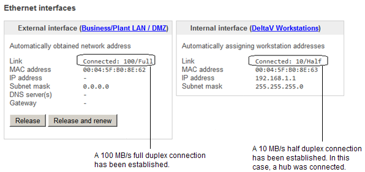

Troubleshooting the Smart Firewall's initial setup
LEDs for Ethernet communications link status and speed - 10/100 MB/s auto-sensing

| LED | Meaning |
|---|---|
| Connection status indicator (LED on the left side of each network port) |
Steady green or blinking: good link. Unlit: the device on the other end of the cable is not powered up or the cable is bad, or over 100 meters long. You can confirm the quality of the cable by verifying the LEDs on the adjacent port work with the same cable and end device or by testing the cable. |
| Link rate indicator (LED on the right side of each network port) |
Steady amber: a 100 MB/s link is established. Unlit: a 10 MB/s link is established. |
LEDs for power and errors
Refer to the preceding image for the location of the power and error LEDs on the Smart Firewall.
| LED | Meaning |
|---|---|
|
Error indication:
Steady = Power Supply Unit (PSU) |
Error red and power green: only one power cord is connected. The alarm contact TTL output goes to a Low state under these conditions. Refer to The alarm contact for more information. |
| Power indication |
Steady green: the firewall is powered by either or both AC inputs. Power green and error red: only one power cord is connected. The alarm contact TTL output goes to a Low state under this conditions. Refer to The alarm contact for more information. |
Troubleshooting Ethernet communications - duplex operation
The Configuration Summary page in the firewall's web UI provides
information about the external (plant LAN) and internal (DeltaV workstations)
Ethernet communications. Refer to the web UI's online help for information on
the Configuration Summary page. The following image shows the type of
information displayed on the Configuration Summary page.

Troubleshooting Ethernet communications - bandwidth usage
The Dashboard Summary page in the firewall's web UI provides information on bandwidth usage (network loading). The Port 1 and Port 2 bandwidth displays use averaging and do not indicate brief spikes in bandwidth. These measurements are intended to show longer term trends in network bandwidth utilization that should normally be much lower than the 100 MB/s theoretical maximum. For more precise bandwidth measurements use an external network monitor, or if the Smart Firewall is connected to a managed switch, use the switch port diagnostics.
The alarm contact
The alarm contact is used to monitor the Smart Firewall. It contains two screw terminals for 16-30 AWG wires. The left hand screw terminal is the High Side of a +5V TTL output and the right hand screw terminal is the Low Side or ground connection for the TTL output. Apply no more than 2 inch-pounds of torque to these screw terminals after the wires are installed or damage may result. It is not necessary to remove the terminal block from the Smart Firewall front panel in order to install the alarm contact wiring.
If you need to replace the firewall, you can unscrew the two screws on the front panel that hold the terminal block in place and remove the terminal block with the existing wires. This way the terminal block can be reused on the new firewall with the wires already attached.